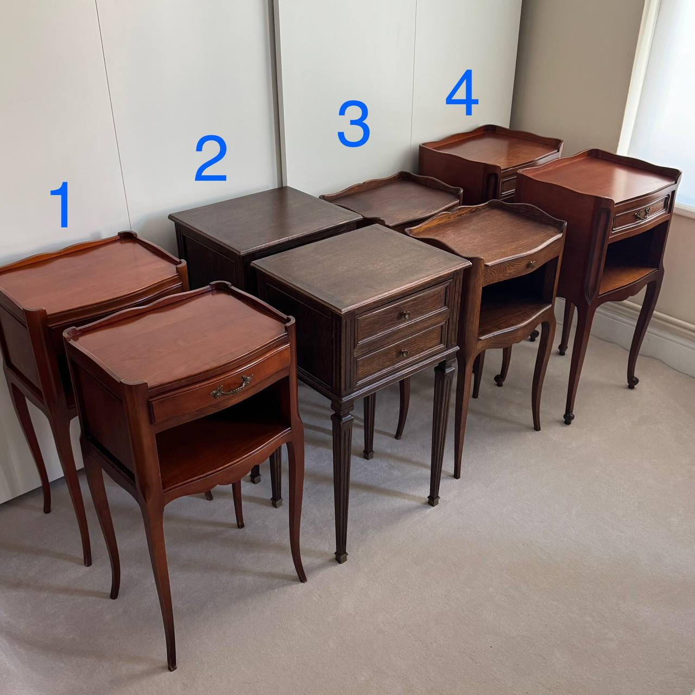

Last updated: 26 April 2026
Reseller Burnout: Why Everyone Loves Sourcing but Nobody Wants to List
There’s a confession that shows up in reseller communities every single week, and it goes roughly like this:
“I love sourcing. Walking into a charity shop and finding a gem is the best feeling. But when I get home, I just stare at the pile and don’t list it. I’ve probably got 200 items sitting in my garage right now.”
If that sounds familiar, you’re not lazy. You’re experiencing the sourcing-to-listing gap — the single most common reason resellers burn out, scale back, or quit entirely. The sourcing half of the business is a dopamine hit. The listing half is homework. And most of us didn’t sign up for homework.
Why sourcing is addictive
Sourcing works on the same psychological loop as treasure hunting. You walk into a car boot sale, a charity shop, a flea market, or an antiques fair not knowing what you’ll find. Every shelf, every table, every box under a trestle is a lottery ticket. Most of the time it’s nothing. But sometimes you pull out a £3 jacket worth £45, or a £1 vintage mug that sells for £20, and your brain fires off dopamine like you just won something.
That intermittent reinforcement — unpredictable wins mixed with frequent misses — is the exact same reward pattern behind slot machines and social media feeds. It’s profoundly motivating. One reseller in a popular thread put it perfectly: “I can remember when, where and how much I paid for an item, even if it’s been a while — but I can’t remember what I had for lunch today.” That’s not a memory quirk. That’s dopamine encoding.
Sourcing is also physical, social, and exploratory. You’re out of the house, walking around, making small talk with sellers, using knowledge you’ve built over months or years. It feels like a skill. It feels like fun. Nobody has to force themselves to go sourcing.
Why listing feels like homework
Listing is the opposite of all of that. It’s solitary desk work, done at home, with no immediate reward. And it takes longer than people think.
The real maths: a single item, listed properly, takes 4 to 8 minutes. That’s photographing from multiple angles (natural light, clean background, any flaws), writing a descriptive title, filling in the category and condition fields, writing a description, researching comparable sold prices to set your own, and uploading to one platform. Cross-listing to a second platform adds another 2–4 minutes.
So a solid weekend sourcing trip that brings home 20 items has just created 80 to 160 minutes of desk work. And that work has no excitement in it. No lottery tickets. No surprises. Just the same sequence — photograph, type, research, upload — repeated twenty times.
Most resellers don’t do that work in one sitting. They tell themselves they’ll do it “tomorrow evening” or “at the weekend”. Tomorrow becomes next week. The pile grows. Newer, more exciting stock arrives and gets layered on top. The older items become invisible.
Sound familiar? You’re not alone. This is the default trajectory for almost everyone who resells.

The part-timer squeeze
If you resell alongside a day job, the squeeze is even tighter. Sourcing happens on weekends — it’s the reward, the fun part, the reason you got into this. Listing has to happen on weekday evenings, after work, when you’re already tired.
As one poster in a reseller community put it: “As someone with a 9–5 job, this just became a chore.”
That’s the core tension. A side hustle that was supposed to be enjoyable has split into two activities: one that’s genuinely fun (weekends) and one that feels like a second job (evenings). When listing sessions get skipped often enough, the unlisted pile grows until the whole operation feels overwhelming rather than rewarding.
Even full-time resellers aren’t immune. One person running a six-figure reselling business posted: “I am 51 and just do it for fun. I just don’t have the drive anymore. I probably, sadly, will in the next 12 months let a 100k+ business die on the vine.” Revenue doesn’t prevent burnout. If anything, scale amplifies it because the listing backlog scales too.
The work-to-profit reality check
Burnout also has a numbers problem. Reselling looks profitable in gross terms, but the real hourly rate after sourcing time, listing time, packing, posting, customer messages, and returns is often shockingly low.
One widely-shared post in an ecommerce community detailed a month with £31,000 in revenue that actually lost £3,872 once all costs were accounted for — fees, postage, returns, and the time cost of managing it all. The poster quit shortly after. That’s an extreme case, but the pattern is common: people track what they sell, not what it actually cost them (in time and money) to sell it.
When you’re enjoying the work, the hourly rate doesn’t matter as much. When listing starts feeling like drudgery, the low effective rate becomes impossible to ignore.
Signs you’re burning out
Burnout doesn’t arrive with a notification. It creeps in. These are the warning signs that show up again and again in reseller communities:
- The unlisted pile keeps growing — you keep buying but listing sessions get shorter and further apart
- You dread the desk — the thought of photographing items after work fills you with the same feeling as unfinished homework
- Relief when items don’t sell — because it means you don’t have to pack and post them
- Fantasising about a garage sale — the recurring thought of just getting rid of everything at once, at any price, for the relief of an empty room
- Algorithms feel like a treadmill — constantly relisting, bumping, and refreshing to stay visible on platforms becomes exhausting rather than strategic
- Sourcing loses its spark — when even the treasure hunt starts feeling like work, the burnout has reached the last part of the business that was still fun
- You stop tracking numbers — you know roughly what you’re making but you’ve stopped logging costs, which means you’ve also stopped caring whether it’s actually profitable
One reseller who walked away after nine profitable years summed it up: “I just feel like a weight has been lifted. I’m not worried about being active every day, no thoughts of algorithms.” When quitting feels like relief rather than loss, the burnout has been building for a long time.
And then there’s the ultimate sign: “My love for reselling faded, so I had a garage sale and practically just gave everything away.” That post had hundreds of upvotes and dozens of people saying “same”. It’s not a one-off. It’s a pattern.
How to make listing less painful
You can’t turn listing into sourcing. It will always be the less exciting half. But you can reduce the friction enough that it doesn’t become the thing that kills your business.
Batch in short sessions
Don’t try to list 20 items in one go. List 5. Set a timer for 30 minutes, list whatever you can, then stop. Short, frequent sessions beat long, dreaded ones. Three 30-minute sessions across the week will get more items live than one “marathon Sunday” that you keep postponing.
Time-box your photography
Photography is the biggest bottleneck because it requires setup (light, background, space). Do all your photography in one batch, even if you don’t write the listings that day. Having photos ready means the listing step is just typing, which you can do on the sofa with your phone.
Write shorter descriptions
Most resellers over-describe. The buyer cares about: what is it, what condition is it in, what are the measurements (if relevant), and what’s the price. That’s four lines. Nobody is reading your 200-word essay about a vintage teapot. Put the detail in the photos and keep the text minimal.
Apply the 80/20 rule to photos
Two or three good photos sell almost as well as eight. One clear shot of the front, one of any label or brand marking, one of any flaw. Done. The diminishing returns on photo number four are almost zero for most items under £50.
Log everything at the point of purchase
The hidden listing blocker isn’t the listing itself — it’s not knowing what you paid. If you didn’t record the cost price when you bought the item, you’ll stall on pricing later because you can’t calculate your margin. Log every item the moment you pay for it: what it is, what it cost, where you bought it. Even a quick note on your phone is enough. This one habit removes the biggest source of “I’ll do it later” paralysis.
Use templates
If you sell similar categories repeatedly (clothing, books, homeware), create a description template with blanks for brand, size, condition and measurements. Pasting a template and filling in four fields is faster than writing from scratch every time.
When to scale back vs when to quit
Not every case of burnout means you should stop. Sometimes you just need to shrink.
Scale back if:
- You still enjoy sourcing but the volume of listing has become unmanageable
- The problem is time, not motivation — your day job or family life has squeezed out the listing hours
- You’re profitable on a per-item basis but drowning in volume
Scaling back means: fewer sourcing trips, pickier buys (only items worth £20+ profit), fewer platforms, and a hard cap on how many unlisted items you allow to accumulate before you stop buying.
Consider stopping if:
- Sourcing itself no longer brings you any pleasure
- You feel genuine relief at the thought of selling everything off
- Your effective hourly rate, once you account for all the invisible hours, is below minimum wage and the work isn’t fun enough to justify it
- It’s affecting your mood, your evenings, your weekends, or your relationships
There’s no shame in stopping. Reselling is supposed to be a side hustle or a livelihood, not a source of chronic stress. If the fun is gone and the numbers don’t justify the grind, a clean exit (car boot to clear stock, charity donation for the rest) is a perfectly rational decision.
How FlipperHelper helps
A lot of listing fatigue isn’t about the listing itself — it’s about all the tracking and admin around the listing. What did I pay for this? Where did I buy it? How long has it been sitting here? Am I actually making money?
FlipperHelper was built to handle that overhead so listing is the only remaining step:
- Log at the car boot — add an item in seconds with cost price, photo and source location, right at the point of purchase. Works offline. No more “I can’t remember what I paid” paralysis later.
- See your real numbers — cost prices, fees, transport expenses and profit per item, per trip, per month. When you know your actual margins, listing decisions (price it, discount it, donate it) become obvious.
- Track what’s sitting — sort inventory by how long each item has been in stock. Spot the items that need a price drop or a charity-shop run before they become a death pile.
- Export to Google Sheets — hand clean CSV data to your accountant or use it for your own end-of-year review without manually copying from five different platforms.
The app doesn’t list items for you — nothing can replace that step. But it removes the admin drag that makes listing feel twice as long as it needs to be.
Download FlipperHelper on the App StoreGet FlipperHelper on Google Play
FAQ
Why do resellers love sourcing but hate listing?
Sourcing triggers a dopamine response similar to treasure hunting — each find is a small, unpredictable reward. Listing is repetitive desk work with no immediate payoff: photographing, measuring, writing descriptions, pricing, uploading. The brain registers sourcing as play and listing as homework. This mismatch is the single biggest reason resellers accumulate unlisted stock and eventually burn out.
How long does it actually take to list one item?
On average, 4 to 8 minutes per item when done properly — photographing, titling, describing, price-researching and uploading to one platform. Cross-listing to a second platform adds another 2–4 minutes. A weekend haul of 20 items means roughly 80–160 minutes of pure desk work before a single item goes live.
What are the signs of reseller burnout?
A growing pile of unlisted stock you keep walking past, dreading the idea of photographing items after work, feeling relief when items don’t sell (less packing to do), fantasising about a garage sale to just get rid of everything, and losing interest in sourcing trips that used to excite you. If several of these sound familiar, you’re likely already burning out.